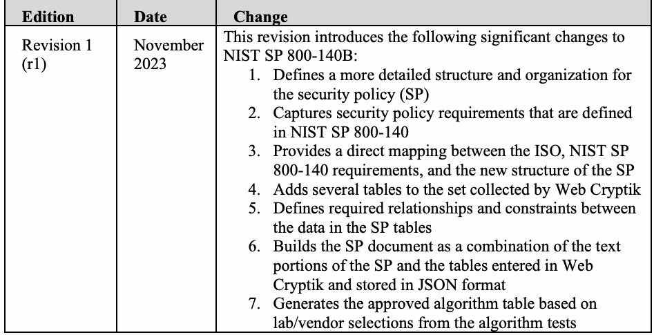

NIST Special Publication · PDF 原文抽出
Cryptographic Module Validation Program (CMVP) Security Policy Requirements: CMVP Validation Authority Updates to ISO/IEC 24759 and ISO/IEC 19790 Annex B
暗号モジュール検証プログラム（CMVP）のセキュリティポリシー要件
NIST SP 800-140B Rev. 1（Cryptographic Module Validation Program (CMVP) Security Policy Requirements: CMVP Validation Authority Updates to ISO/IEC 24759 and ISO/IEC 19790 Annex B）の英文と日本語訳を段落ごとに並べた閲覧用ページです。暗号モジュールのセキュリティポリシーに必要な情報と構成、およびCMVPがISO/IEC 24759やISO/IEC 19790附属書Bの要件に加える変更を示します。 翻訳は非公式です。要件の確認にはNIST の正式版 PDFを参照してください。
PDF から抽出した原文は原本との照合待ちです。
NIST Special Publication NIST SP 800-140Br1
NIST特別刊行物 NIST SP 800-140Br1
Cryptographic Module Validation Program (CMVP) Security Policy
暗号モジュール検証プログラム（CMVP）セキュリティポリシー
未レビュー訳Requirements:
要件：
未レビュー訳CMVP Validation Authority Updates to ISO/IEC 24759 and ISO/IEC 19790 Annex B
ISO/IEC 24759およびISO/IEC 19790附属書Bに対するCMVP検証機関の更新
未レビュー訳David Hawes Alexander Calis Roy Crombie
David Hawes Alexander Calis Roy Crombie
未レビュー訳This publication is available free of charge from: https://doi.org/10.6028/NIST.SP.800-140Br1
本刊行物は次のURLから無料で入手できます：https://doi.org/10.6028/NIST.SP.800-140Br1
未レビュー訳NIST Special Publication NIST SP 800-140Br1
NIST特別刊行物 NIST SP 800-140Br1
未レビュー訳Cryptographic Module Validation Program (CMVP) Security Policy
暗号モジュール検証プログラム（CMVP）セキュリティポリシー
未レビュー訳Requirements:
要件：
未レビュー訳CMVP Validation Authority Updates to ISO/IEC 24759 and ISO/IEC 19790 Annex B
ISO/IEC 24759およびISO/IEC 19790附属書Bに対するCMVP検証機関の更新
未レビュー訳David Hawes Alexander Calis Computer Security Division
David Hawes Alexander Calis コンピュータセキュリティ部門
未レビュー訳Information Technology Laboratory
情報技術研究所
未レビュー訳Roy Crombie
Roy Crombie
未レビュー訳Canadian Centre for Cyber Security
カナダ・サイバーセキュリティセンター
未レビュー訳https://doi.org/10.6028/NIST.SP.800-140Br1
https://doi.org/10.6028/NIST.SP.800-140Br1
未レビュー訳November 2023
2023年11月
未レビュー訳
カナダ・サイバーセキュリティセンターのロゴ
U.S. Department of Commerce Gina M. Raimondo, Secretary
米国商務省 Gina M. Raimondo 長官
未レビュー訳National Institute of Standards and Technology
国立標準技術研究所
未レビュー訳Laurie E. Locascio, NIST Director and Under Secretary of Commerce for Standards and Technology
Laurie E. Locascio、NIST所長兼商務省標準技術担当次官
未レビュー訳Certain commercial equipment, instruments, software, or materials, commercial or non-commercial, are identified in this paper in order to specify the experimental procedure adequately. Such identification does not imply recommendation or endorsement of any product or service by NIST, nor does it imply that the materials or equipment identified are necessarily the best available for the purpose.
本書では、実験手順を適切に規定するため、商業用または非商業用の特定の商用機器、計測器、ソフトウェア、または材料を識別する場合がある。これらを特定しても、NISTが製品またはサービスを推奨または保証することを意味せず、識別された材料や機器が目的に対して必ずしも最良であることも意味しない。
未レビュー訳There may be references in this publication to other publications currently under development by NIST in accordance with its assigned statutory responsibilities. The information in this publication, including concepts and methodologies, may be used by federal agencies even before the completion of such companion publications. Thus, until each publication is completed, current requirements, guidelines, and procedures, where they exist, remain operative. For planning and transition purposes, federal agencies may wish to closely follow the development of these new publications by NIST.
本刊行物には、割り当てられた法定責任に従ってNISTが現在策定中の他の刊行物への参照が含まれる場合がある。これらの刊行物が完成する前であっても、本刊行物に記載された情報（概念および方法論を含む）は連邦機関が利用できる。したがって、各刊行物が完成するまでは、既存の要件、ガイドライン、および手順は引き続き有効である。連邦機関は、計画および移行のため、NISTによるこれらの新刊行物の策定状況を注意深く確認するとよい。
Organizations are encouraged to review all draft publications during public comment periods and provide feedback to NIST. Many NIST cybersecurity publications, other than the ones noted above, are available at https://csrc.nist.gov/publications.
組織には、公開コメント期間中にすべての草案を確認し、NISTに意見を提出することが推奨される。上記以外の多くのNISTサイバーセキュリティ刊行物は https://csrc.nist.gov/publications で入手できる。
Authority This publication has been developed by NIST in accordance with its statutory responsibilities under the Federal Information Security Modernization Act (FISMA) of 2014, 44 U.S.C. § 3551 et seq., Public Law (P.L.) 113-283. NIST is responsible for developing information security standards and guidelines, including minimum requirements for federal information systems, but such standards and guidelines shall not apply to national security systems without the express approval of appropriate federal officials exercising policy authority over such systems. This guideline is consistent with the requirements of the Office of Management and Budget (OMB) Circular A-130.
権限 本刊行物は、2014年連邦情報セキュリティ近代化法（FISMA）、合衆国法典第44編§3551以降、公法（P.L.）113-283に基づく法定責任に従い、NISTが策定した。NISTは、連邦情報システムの最低要件を含む情報セキュリティ標準およびガイドラインの策定を担う。ただし、適切な連邦当局者が当該システムに関する政策権限に基づき明示的に承認しない限り、これらの標準およびガイドラインは国家安全保障システムに適用されない。本ガイドラインは、行政管理予算局（OMB）通達A-130の要件に整合している。
Nothing in this publication should be taken to contradict the standards and guidelines made mandatory and binding on federal agencies by the Secretary of Commerce under statutory authority. Nor should these guidelines be interpreted as altering or superseding the existing authorities of the Secretary of Commerce, Director of the OMB, or any other federal official. This publication may be used by nongovernmental organizations on a voluntary basis and is not subject to copyright in the United States. Attribution would, however, be appreciated by NIST.
本刊行物のいかなる記述も、法定権限に基づき商務長官が連邦機関に義務付け、拘束力を持たせた標準およびガイドラインに反すると解釈すべきではない。また、本ガイドラインは、商務長官、OMB長官、またはその他の連邦当局者の既存の権限を変更または置き換えるものと解釈すべきではない。本刊行物は非政府組織が任意で利用でき、米国では著作権の対象ではない。ただし、NISTへの帰属表示を歓迎する。
未レビュー訳NIST Technical Series Policies Copyright, Use, and Licensing Statements NIST Technical Series Publication Identifier Syntax
NIST技術シリーズの方針 著作権、利用、およびライセンスに関する声明 NIST技術シリーズ刊行物識別子の構文
未レビュー訳Publication History Approved by the NIST Editorial Review Board on 2023-11-13
刊行履歴 NIST編集審査委員会により2023-11-13に承認
未レビュー訳How to Cite this NIST Technical Series Publication: Hawes D, Calis A, Crombie R (2023) Cryptographic Module Validation Program (CMVP) Security Policy Requirements: CMVP Validation Authority Updates to ISO/IEC 24759 and ISO/IEC 19790 Annex B. (National Institute of Standards and Technology, Gaithersburg, MD), NIST Special Publication (SP) NIST SP 800-140Br1. https://doi.org/10.6028/NIST.SP.800-140Br1
NIST技術シリーズ刊行物の引用方法：Hawes D, Calis A, Crombie R (2023) Cryptographic Module Validation Program (CMVP) Security Policy Requirements: CMVP Validation Authority Updates to ISO/IEC 24759 and ISO/IEC 19790 Annex B.（National Institute of Standards and Technology、Gaithersburg, MD）、NIST特別刊行物（SP）NIST SP 800-140Br1。https://doi.org/10.6028/NIST.SP.800-140Br1
未レビュー訳Author ORCID iDs David Hawes: 0000-0002-0173-6795 Alexander Calis: 0000-0003-1937-8129
著者のORCID iD David Hawes: 0000-0002-0173-6795 Alexander Calis: 0000-0003-1937-8129
未レビュー訳Contact Information sp800-140-comments@nist.gov
連絡先 sp800-140-comments@nist.gov
未レビュー訳National Institute of Standards and Technology Attn: Computer Security Division, Information Technology Laboratory 100 Bureau Drive (Mail Stop 8930) Gaithersburg, MD 20899-8930
National Institute of Standards and Technology 宛先：Computer Security Division, Information Technology Laboratory, 100 Bureau Drive (Mail Stop 8930), Gaithersburg, MD 20899-8930
未レビュー訳All comments are subject to release under the Freedom of Information Act (FOIA).
すべてのコメントは、情報公開法（FOIA）に基づく公開の対象となる。
Abstract
概要
NIST Special Publication (SP) 800-140Br1 is to be used in conjunction with ISO/IEC 19790 Annex B and ISO/IEC 24759 Section 6.14. This Special Publication modifies only those requirements identified in this document. NIST SP 800-140Br1 also specifies the content of the information required in ISO/IEC 19790 Annex B. As a validation authority, the Cryptographic Module Validation Program (CMVP) may modify, add, or delete Vendor Evidence (VE) and/or Test Evidence (TE) specified under paragraph 6.14 of the ISO/IEC 24759 and specify the order of the security policy as stated in ISO/IEC 19790:2012 B.1.
NIST特別刊行物（SP）800-140Br1は、ISO/IEC 19790附属書BおよびISO/IEC 24759第6.14節と併せて使用する。本特別刊行物は、本書で特定された要件のみを変更する。NIST SP 800-140Br1は、ISO/IEC 19790附属書Bで求められる情報の内容も規定する。検証機関として、暗号モジュール検証プログラム（CMVP）は、ISO/IEC 24759第6.14項で指定されたベンダー証拠（VE）および／または試験証拠（TE）を変更、追加、または削除し、ISO/IEC 19790:2012 B.1に記載されたセキュリティポリシーの順序を指定できる。
未レビュー訳Keywords
キーワード
CMVP; Cryptographic Module Validation Program; FIPS 140; FIPS 140 testing; ISO/IEC 19790; ISO/IEC 24759; security policy; testing requirement; vendor documentation; vendor evidence.
CMVP；暗号モジュール検証プログラム；FIPS 140；FIPS 140試験；ISO/IEC 19790；ISO/IEC 24759；セキュリティポリシー；試験要件；ベンダー文書；ベンダー証拠。
未レビュー訳Reports on Computer Systems Technology
コンピュータシステム技術に関する報告書
The Information Technology Laboratory (ITL) at the National Institute of Standards and Technology (NIST) promotes the U.S. economy and public welfare by providing technical leadership for the Nation’s measurement and standards infrastructure. ITL develops tests, test methods, reference data, proof of concept implementations, and technical analyses to advance the development and productive use of information technology. ITL’s responsibilities include the development of management, administrative, technical, and physical standards and guidelines for the cost-effective security and privacy of other than national security-related information in federal information systems. The Special Publication 800-series reports on ITL’s research, guidelines, and outreach efforts in information system security, and its collaborative activities with industry, government, and academic organizations.
国立標準技術研究所（NIST）の情報技術研究所（ITL）は、米国の計量・標準インフラに技術的リーダーシップを提供し、米国経済と公共福祉の向上に貢献している。ITLは、情報技術の開発と効果的な利用を促進するため、試験、試験方法、参照データ、概念実証実装、および技術分析を開発する。ITLの責務には、連邦情報システムにおける国家安全保障関連以外の情報の費用対効果に優れたセキュリティとプライバシーのための、管理上、運用上、技術上、および物理的な標準とガイドラインの策定が含まれる。特別刊行物800シリーズは、情報システムセキュリティに関するITLの研究、ガイドライン、普及活動、ならびに産業界、政府、学術機関との協力活動を報告する。
Supplemental Content
補足資料
未レビュー訳See https://csrc.nist.gov/projects/cmvp/sp800-140-series-info for details about the NIST Special Publication (SP) 800-140x series publications and their relationships to ISO/IEC 19790 and ISO/IEC 24759.
NIST特別刊行物（SP）800-140xシリーズの刊行物およびISO/IEC 19790、ISO/IEC 24759との関係については、https://csrc.nist.gov/projects/cmvp/sp800-140-series-info を参照。
未レビュー訳Audience
対象読者
未レビュー訳This document is intended for vendors, testing labs, and CMVP to address issues in ISO/IEC 19790, Information technology – Security techniques – Security requirements for cryptographic modules, and ISO/IEC 24759, Information technology – Security techniques – Test requirements for cryptographic modules.
本書は、ISO/IEC 19790「情報技術－セキュリティ技法－暗号モジュールのセキュリティ要件」およびISO/IEC 24759「情報技術－セキュリティ技法－暗号モジュールの試験要件」に関する課題に対処するため、ベンダー、試験機関、およびCMVPを対象とする。
Table of Contents
目次
Introduction — 1
序論 — 1
未レビュー訳Scope — 1
適用範囲 — 1
未レビュー訳Normative References — 1
規範参照 — 1
Document Organization — 2
文書の構成 — 2
General — 2
一般 — 2
未レビュー訳Modifications — 2
変更 — 2
未レビュー訳Security Requirements — 3
セキュリティ要件 — 3
未レビュー訳Changes to ISO/IEC 24759 Section 6.14 and ISO/IEC 19790 Annex B Requirements3
ISO/IEC 24759第6.14節およびISO/IEC 19790附属書Bの要件に対する変更 — 3
未レビュー訳Documentation Requirement Additions — 4
文書化要件の追加 — 4
未レビュー訳Documentation Input, Structure, and Formatting — 6
文書の入力、構成、および書式 — 6
未レビュー訳Appendix A. Document Revisions — 24
付録A. 文書の改訂履歴 — 24
未レビュー訳Appendix B. List of Symbols, Abbreviations, and Acronyms — 25
付録B. 記号、略語、および頭字語の一覧 — 25
Introduction
序論
未レビュー訳Scope
適用範囲
未レビュー訳This document specifies the Cryptographic Module Validation Program (CMVP) modifications of the methods to be used by a Cryptographic and Security Testing Laboratory (CSTL) to demonstrate conformance. This document also specifies the modification of documentation for providing evidence to demonstrate conformity. Unless otherwise specified in this document, the test requirements are specified in ISO/IEC 19790 Annex B and ISO/IEC 24759 Section 6.14.
本書は、暗号モジュール検証プログラム（CMVP）が定める、暗号・セキュリティ試験機関（CSTL）が適合性を実証するために用いる方法の変更を規定する。また、適合性を実証する証拠を提供するための文書の変更も規定する。本書で別途指定されない限り、試験要件はISO/IEC 19790附属書BおよびISO/IEC 24759第6.14節に規定される。
未レビュー訳Normative References
規範参照
未レビュー訳This section identifies the normative references cited as ISO/IEC 19790 and ISO/IEC 24759. The specific editions to be used are ISO/IEC 19790:2012 and ISO/IEC 24759:2017. The version 19790:2012 referenced here includes the corrections made in 2015. National Institute of Standards and Technology (2019) Security Requirements for Cryptographic Modules. (U.S. Department of Commerce, Washington, DC), Federal Information Processing Standards Publication (FIPS) 140-3. https://doi.org/10.6028/NIST.FIPS.140-3
本節では、ISO/IEC 19790およびISO/IEC 24759として引用する規範参照を示す。使用する版はISO/IEC 19790:2012およびISO/IEC 24759:2017である。ここで参照する19790:2012には、2015年に行われた正誤修正が含まれる。National Institute of Standards and Technology (2019) Security Requirements for Cryptographic Modules. (U.S. Department of Commerce, Washington, DC), Federal Information Processing Standards Publication (FIPS) 140-3. https://doi.org/10.6028/NIST.FIPS.140-3
未レビュー訳Document Organization
文書の構成
未レビュー訳General
一般
未レビュー訳Section 3.1 of this document specifies any modifications to ISO/IEC 19790 Annex B and ISO/IEC 24759 Section 6.14. Section 3.2 identifies any additional requirements for the security policy that are documented in other publications. Section 3.3 describes the security policy structure and how the requirements in Sections 3.1 and 3.2 map into that structure. The requirements statements are presented as originally written in ISO/IEC 19790 Annex B and ISO/IEC 24759. These often include acronyms and abbreviations spelled out earlier within those documents. When the first use occurs within this document, the acronym or abbreviation will be spelled out within brackets immediately following the occurrence. These statements also include the British English standard spellings for the words “zeroize” and “authorize” as “zeroise” and “authorise”.
本書の第3.1節は、ISO/IEC 19790附属書BおよびISO/IEC 24759第6.14節に対する変更を規定する。第3.2節は、他の刊行物に記載されたセキュリティポリシーの追加要件を示す。第3.3節では、セキュリティポリシーの構成と、第3.1節および第3.2節の要件をその構成にどのように対応付けるかを説明する。要件文は、ISO/IEC 19790附属書BおよびISO/IEC 24759に記載された原文のまま示す。これらには、当該文書内の前の箇所で正式名称が示された頭字語や略語が含まれることが多い。本書で初めて使用する場合は、その直後の角括弧内に正式名称または説明を記す。また、これらの要件文では、zeroizeおよびauthorizeの英国式標準綴りであるzeroiseおよびauthoriseも使用する。
未レビュー訳Modifications
変更
未レビュー訳Modifications to ISO/IEC 24759 Section 6.14, Cryptographic module security policy, will follow a similar format as ISO/IEC 24759. For additions to test requirements, new Test Evidence (TE) or Vendor Evidence (VE) will be listed by increasing the “sequence_number.” Modifications can include a combination of additions using underline and deletions using strikethrough. If no changes are required, the paragraph will indicate “No change.” ISO/IEC 19790 Annex B includes security policy requirements in bulleted form but does not include ways to format the required information. Modifications are addressed by adding formatting guidance (e.g., tables, images), adding underlined text, or using strikethrough for deletion. If no changes are required, the paragraph will indicate “No change.” Additional guidance may also be included to address requirements presented in NIST Special Publication (SP) 800-140, SP 800-140A, SP 800-140C, SP 800-140D, SP 800-140E, and SP 800-140F.1
ISO/IEC 24759第6.14節「暗号モジュールのセキュリティポリシー」に対する変更は、ISO/IEC 24759と同様の形式に従う。試験要件を追加する場合、新しい試験証拠（TE）またはベンダー証拠（VE）を「sequence_number」の昇順で列挙する。変更には、下線による追加と取消線による削除の組み合わせを含めることができる。変更が不要な場合、その段落には「変更なし」と記載する。ISO/IEC 19790附属書Bはセキュリティポリシー要件を箇条書きで示すが、必要な情報の書式設定方法は定めていない。書式に関する指針（例：表、画像）の追加、下線付きテキストの追加、または削除箇所への取消線の使用によって変更を示す。変更が不要な場合、その段落には「変更なし」と記載する。NIST特別刊行物（SP）800-140、SP 800-140A、SP 800-140C、SP 800-140D、SP 800-140E、およびSP 800-140Fに示された要件に対処するため、追加の指針を含める場合もある。1
未レビュー訳Security Requirements
セキュリティ要件
未レビュー訳Changes to ISO/IEC 24759 Section 6.14 and ISO/IEC 19790 Annex B Requirements
ISO/IEC 24759第6.14節およびISO/IEC 19790附属書Bの要件に対する変更
未レビュー訳All requirements from ISO/IEC 24759 Section 6.14 and ISO/IEC 19790 Annex B apply and are required in the security policy as applicable. ISO/IEC 19790 Annex B uses the same section naming convention as ISO/IEC 19790 Section 7 – Security requirements. For example, Annex B Section B.2.1 is named “General,” and B.2.2 is named “Cryptographic module specification,” which is the same as ISO/IEC 19790 Section 7.1 and Section 7.2, respectively. Therefore, the format of the security policy shall be presented in the same order as indicated in Annex B, starting with “General” and ending with “Mitigation of other attacks.” If sections are not applicable, they shall be marked as such in the security policy. ISO/IEC 24759 Section 6.14 – Cryptographic module security policy requirements are modified as indicated below:
ISO/IEC 24759第6.14節およびISO/IEC 19790附属書Bの要件は、該当する場合すべて適用され、セキュリティポリシーに記載しなければならない。ISO/IEC 19790附属書Bは、ISO/IEC 19790第7節「セキュリティ要件」と同じ節名の規則を用いる。例えば、附属書BのB.2.1節は「一般」、B.2.2節は「暗号モジュールの仕様」と題され、それぞれISO/IEC 19790の7.1節および7.2節と同じである。したがって、セキュリティポリシーは附属書Bに示された順序、すなわち「一般」から始まり「その他の攻撃の緩和」で終わる順で記載しなければならない。該当しない節は、セキュリティポリシー内で該当しない旨を示さなければならない。ISO/IEC 24759第6.14節「暗号モジュールのセキュリティポリシー要件」は、以下に示すとおり変更する。
未レビュー訳No change.
変更なし。
ISO/IEC 19790 Annex B requirements are modified as indicated below:
ISO/IEC 19790附属書Bの要件は、以下に示すとおり変更する。
•B.2.1 General
•B.2.1 一般
未レビュー訳No change.
変更なし。
•B.2.2 Cryptographic module specification
•B.2.2 暗号モジュールの仕様
未レビュー訳•Illustrative diagram, schematic, or photograph of the module. A photograph included for hardware modules. If the security policy encompasses multiple versions of the module, each version is represented separately or annotated that the representation is illustrated for all versions. For a software or , firmware, hybrid, or sub-chip cryptographic module, the security policy includes a block diagram that illustrates:
•モジュールの図、模式図、または写真。ハードウェアモジュールの場合は写真を含める。セキュリティポリシーが複数のモジュール版を対象とする場合、各版を個別に示すか、図示がすべての版に共通することを注記する。ソフトウェア、ファームウェア、ハイブリッド、またはサブチップ型暗号モジュールの場合、セキュリティポリシーには次を示すブロック図を含める。
未レビュー訳The location of the logical object of the software or firmware module with o respect to the operating system, other supporting applications, and the cryptographic boundary so that all of the logical and physical layers between the logical object and the cryptographic boundary are clearly defined and The interactions of the logical object of the software or firmware module with o the operating system and other supporting applications resident within the cryptographic boundary. Tested Operational Environment’s Physical Perimeter (TOEPP) – The o location of the cryptographic module with respect to the TOEPP that is part of the module’s tested configuration but may be outside of the module’s cryptographic boundary so that all of the logical and physical layers between the cryptographic module and the TOEPP are clearly defined. This also includes a description and components list of the TOEPP.
ソフトウェアまたはファームウェアモジュールの論理オブジェクトが、オペレーティングシステム、その他のサポートアプリケーション、および暗号境界に対してどこに位置するか。論理オブジェクトと暗号境界の間にあるすべての論理層および物理層を明確に定義すること。また、暗号境界内に存在するオペレーティングシステムおよびその他のサポートアプリケーションと、ソフトウェアまたはファームウェアモジュールの論理オブジェクトとの相互作用。試験済み運用環境の物理的境界（TOEPP）については、暗号モジュールの試験構成の一部であるがモジュールの暗号境界外にある場合もあるTOEPPに対し、暗号モジュールがどこに位置するかを示し、暗号モジュールとTOEPPの間にあるすべての論理層および物理層を明確に定義すること。TOEPPの説明および構成要素一覧も含める。
未レビュー訳•Precise definition of the module’s physical TOEPP and cryptographic boundariesy
•モジュールの物理的TOEPPおよび暗号境界の厳密な定義
未レビュー訳•B.2.3 Cryptographic module interfaces
•B.2.3 暗号モジュールのインターフェース
未レビュー訳No change.
変更なし。
•B.2.4 Roles, services, and authentication
•B.2.4 役割、サービス、および認証
未レビュー訳No change.
変更なし。
•B.2.5 Software/firmware security
•B.2.5 ソフトウェア／ファームウェアのセキュリティ
未レビュー訳No change.
変更なし。
•B.2.6 Operational environment
•B.2.6 運用環境
未レビュー訳No change.
変更なし。
•B.2.7 Physical security
•B.2.7 物理的セキュリティ
未レビュー訳No change.
変更なし。
•B.2.8 Non-invasive security
•B.2.8 非侵襲的セキュリティ
未レビュー訳No change.
変更なし。
•B.2.9 Sensitive security parameters management
•B.2.9 機微なセキュリティパラメータの管理
•Provide an key SSP [sensitive security parameter] table specifying the key SSP type(s), strength(s) in bits, security function(s), security function certification number(s), where and how the key(s) SSP(s) is generated, whether the key(s) SSP(s) is imported or exported what method(s) is used to input or output the SSP(s), and any SSP generation and establishment method used, and indicate any related keys SSPs.
•鍵SSP［機微なセキュリティパラメータ］表を提示し、鍵SSPの種類、ビット単位の強度、セキュリティ機能、セキュリティ機能の認証番号、鍵SSPがどこでどのように生成されるか、鍵SSPがインポートまたはエクスポートされるか、SSPの入力または出力に用いる方法、SSPの生成および確立に用いる方法があればその方法、ならびに関連する鍵SSPを明記する。
未レビュー訳•Specify the electronic and manual key SSP I/O [input/output] method(s).
•電子的および手動の鍵SSP入出力（I/O）方法を明記する。
•Specify the SSP storage technique(s) areas, formats (encrypted or plaintext), and persistence types (dynamic or static).
•SSPの保管技法、保管領域、形式（暗号化または平文）、および永続性の種類（動的または静的）を明記する。
未レビュー訳•B.2.10 Self-tests
•B.2.10 自己試験
未レビュー訳No change.
変更なし。
•B.2.11 Lifecycle assurance
•B.2.11 ライフサイクル保証
未レビュー訳No change.
変更なし。
•B.2.12 Mitigation of other attacks
•B.2.12 その他の攻撃の緩和
未レビュー訳No change.
変更なし。
Documentation Requirement Additions
文書化要件の追加
未レビュー訳In addition to ISO/IEC 24759 Section 6.14 and ISO/IEC 19790 Annex B, other publications and documents specify the documentation requirements for the security policy. Many of these requirements relate to the specific conditions and configurations of modules and would not be applicable in many cases. These additional requirements are listed for each section of the security policy, grouped by the source publication or document, and reference the specific section from the document where the requirement is stated. Where possible, they are direct statements from the source documents and would often require the original context to best understand the requirement.
ISO/IEC 24759第6.14節およびISO/IEC 19790附属書Bに加えて、他の刊行物や文書にもセキュリティポリシーの文書化要件が規定されている。これらの要件の多くは、モジュールの特定の条件や構成に関係するため、多くの場合には適用されない。追加要件は、セキュリティポリシーの各節ごとに、出典となる刊行物または文書別にまとめ、要件が記載された当該文書の節を参照する。可能な場合は出典文書の記述を直接示すが、要件を正しく理解するには元の文脈が必要となることが多い。
未レビュー訳•B.2.1 General
•B.2.1 一般
未レビュー訳No additions.
追加なし。
•B.2.2 Cryptographic module specification
•B.2.2 暗号モジュールの仕様
未レビュー訳SP800-140:VE02.20.04
SP800-140:VE02.20.04
Vendor-affirmed security methods – The vendor-provided non-proprietary security o policy shall include a list of all vendor-affirmed security methods.
ベンダーが表明するセキュリティ方式 ― ベンダーが提供する非専有のセキュリティポリシーには、ベンダーが表明するすべてのセキュリティ方式の一覧を含めなければならない。
未レビュー訳•B.2.3 Cryptographic module interfaces
•B.2.3 暗号モジュールのインターフェース
未レビュー訳No additions.
追加なし。
•B.2.4 Roles, services, and authentication
•B.2.4 役割、サービス、および認証
未レビュー訳No additions.
追加なし。
•B.2.5 Software/Firmware security
•B.2.5 ソフトウェア／ファームウェアのセキュリティ
未レビュー訳No additions.
追加なし。
•B.2.6 Operational environment
•B.2.6 運用環境
未レビュー訳No additions.
追加なし。
•B.2.7 Physical security
•B.2.7 物理的セキュリティ
未レビュー訳SP800-140:VE07.26.02
SP800-140:VE07.26.02
High and low temperature – The vendor-provided security policy shall specify the o nominal and high/low temperature range.
高温および低温 ― ベンダーが提供するセキュリティポリシーには、定格温度範囲と高温／低温範囲を明記しなければならない。
未レビュー訳SP800-140:VE07.77.02
SP800-140:VE07.77.02
Temperature shutdown/zeroise – The security policy shall address whether the o employed EFP [environmental failure protection] feature forces module shutdown or zeroises all unprotected SSPs and shall specify the temperature range met.
温度によるシャットダウン／ゼロ化 ― セキュリティポリシーには、採用したEFP［環境故障保護］機能がモジュールをシャットダウンさせるのか、保護されていないすべてのSSPをゼロ化するのかを記載し、適合する温度範囲を明記しなければならない。
未レビュー訳SP800-140:VE07.81.02
SP800-140:VE07.81.02
EFT [environmental failure testing] shutdown/zeroise – The security policy shall o address whether the employed EFT feature forces module shutdown or zeroises all unprotected SSPs and shall specify the temperature range met.
EFT［環境故障試験］によるシャットダウン／ゼロ化 ― セキュリティポリシーには、採用したEFT機能がモジュールをシャットダウンさせるのか、保護されていないすべてのSSPをゼロ化するのかを記載し、適合する温度範囲を明記しなければならない。
未レビュー訳•B.2.8 Non-invasive security
•B.2.8 非侵襲的セキュリティ
未レビュー訳No additions.
追加なし。
•B.2.9 Sensitive security parameters management
•B.2.9 機微なセキュリティパラメータの管理
未レビュー訳SP800-140:VE09.28.03
SP800-140:VE09.28.03
SSP procedural zeroisation – If SSPs are zeroised procedurally while under the o control of the operator (i.e., present to observe that the method has completed successfully or controlled via a remote management session), vendor documentation and the module security policy must specify how the methods shall be performed.
SSPの手順によるゼロ化 ― SSPがオペレーターの管理下で手順によりゼロ化される場合（すなわち、方法が正常に完了したことを確認できる立会いがある場合、またはリモート管理セッションを通じて制御される場合）、ベンダー文書およびモジュールのセキュリティポリシーには、その方法の実施手順を明記しなければならない。
未レビュー訳•B.2.10 Self-tests
•B.2.10 自己試験
未レビュー訳No additions.
追加なし。
•B.2.11 Life cycle assurance
•B.2.11 ライフサイクル保証
未レビュー訳No additions.
追加なし。
•B.2.12 Mitigation of other attacks
•B.2.12 その他の攻撃の緩和
未レビュー訳No additions.
追加なし。
Documentation Input, Structure, and Formatting
文書の入力、構成、および書式
未レビュー訳This section provides further guidance on what type of information is expected for a specific requirement or set of requirements from Annex B and the additional requirements listed in Section 3.2. All of the requirement statements are organized into appropriately named and numbered subsections (e.g., 1.2 – Security Levels, 2.1 – Purpose or Use). Each subsection identifies the applicable requirements and provides any clarifying and explanatory notes. A significant portion of the security policy information will be structured and interrelated. These tables can be input through Web Cryptik or uploaded in JavaScript Object Notation (JSON) format (see https://csrc.nist.gov/projects/cmvp/sp800-140b for information content and format details associated with the structured JSON and Web Cryptik), which would follow a provided schema and table relationship constraints. The text and picture portions of the security policy will be entered into a provided Microsoft Word template document, which follows a specific structure. Within this document are content controls that serve as placeholders for the structured content in Web Cryptik and/or the uploaded JSON file. In this revision of NIST SP 800-140B and the corresponding update to Web Cryptik, the labs/vendors will select algorithms, modes, and properties from the sets that have been tested through the Cryptographic Algorithm Validation Program (CAVP) process. Information on the CAVP process is available at https://csrc.nist.gov/projects/cryptographic-algorithm-validation-program.This will replace the previous process of separately entering that information. Part of the initial information that labs/vendors enter into Web Cryptik will be the CAVP certificate numbers associated with the algorithm tests for that particular module. Web Cryptik will then retrieve and display the relevant information from the CAVP system. Each algorithm or operational environment entry will be listed with the set of capabilities for that test. The lab/vendor will then select the specific items that are implemented in the module. When algorithms are tested in multiple operating environments (OE), they will each have a separate entry in the list. The selected subset will be saved, maintained with the rest of the module’s information, and used to generate the Tested Algorithm table in the security policy. All of this information (i.e., the structured JSON, the uploaded document, and the selected CAVP test information) will be combined into the final security policy and provided as a PDF file. Any changes to the security policy would require making changes to the corresponding source and generating a new version.
本節では、附属書Bの個別要件または一連の要件、および第3.2節に記載された追加要件に対して、どのような情報が期待されるかをさらに説明する。すべての要件文は、適切な名前と番号を持つ小節（例：1.2－セキュリティレベル、2.1－目的または用途）に整理されている。各小節では該当する要件を特定し、明確化および説明のための注記を示す。セキュリティポリシーの情報の多くは、構造化され相互に関連する。これらの表は、Web Cryptikを通じて入力するか、JavaScript Object Notation（JSON）形式でアップロードできる（構造化JSONおよびWeb Cryptikに関連する情報内容と形式の詳細は https://csrc.nist.gov/projects/cmvp/sp800-140b を参照）。入力内容は、提供されたスキーマおよび表間の関係制約に従う。セキュリティポリシーのテキストおよび画像部分は、特定の構造に従うMicrosoft Wordテンプレート文書に入力する。この文書には、Web Cryptik内の構造化コンテンツおよび／またはアップロードされたJSONファイルの内容を配置するためのプレースホルダーとして、コンテンツコントロールが含まれる。NIST SP 800-140Bの本改訂版およびそれに対応するWeb Cryptikの更新では、試験機関／ベンダーは、暗号アルゴリズム検証プログラム（CAVP）のプロセスで試験済みの集合からアルゴリズム、モード、および属性を選択する。CAVPのプロセスに関する情報は https://csrc.nist.gov/projects/cryptographic-algorithm-validation-program で入手できる。これにより、該当情報を個別に入力する従来の手順に置き換わる。試験機関／ベンダーが最初にWeb Cryptikに入力する情報の一部は、該当モジュールのアルゴリズム試験に関連するCAVP証明書番号である。その後、Web CryptikはCAVPシステムから関連情報を取得して表示する。各アルゴリズムまたは運用環境の項目には、その試験における機能一式が一覧表示される。次に試験機関／ベンダーは、モジュールに実装されている個々の項目を選択する。アルゴリズムが複数の運用環境（OE）で試験される場合、一覧では環境ごとに別の項目となる。選択された部分集合は保存され、モジュールの他の情報とともに維持され、セキュリティポリシーの「試験済みアルゴリズム」表の生成に用いられる。これらすべての情報（構造化JSON、アップロード文書、および選択したCAVP試験情報）は最終的なセキュリティポリシーに統合され、PDFファイルとして提供される。セキュリティポリシーを変更する場合は、対応する原資料を変更し、新しい版を生成する必要がある。
未レビュー訳1 General
1 一般
未レビュー訳1.1 Overview
1.1 概要
未レビュー訳Notes: Overview information desired by the vendor
注記：ベンダーが提示する概要情報
未レビュー訳1.2 Security Levels
1.2 セキュリティレベル
未レビュー訳Annex B Requirement Statements
附属書Bの要件文
未レビュー訳•Security Level Table – A table that indicates the individual clause levels and overall level
•セキュリティレベル表 ― 個別条項のレベルおよび全体レベルを示す表
•Security Rating – The overall Security Rating of the module and the Security Levels of individual areas [moved from Annex B Section 2]
•セキュリティ評価 ― モジュール全体のセキュリティ評価および各領域のセキュリティレベル［附属書B第2節から移動］
未レビュー訳Notes: Table generated from previously entered information
注記：入力済み情報から表を生成
未レビュー訳1.3 Additional Information [O]
1.3 追加情報［O］
Notes: Additional vendor information
注記：ベンダーが追加する情報
未レビュー訳2 Cryptographic Module Specification
2 暗号モジュールの仕様
未レビュー訳2.1 Description
2.1 説明
未レビュー訳Annex B Requirement Statements
附属書Bの要件文
未レビュー訳•Description – Description of the module
•説明 ― モジュールの説明
•Purpose – The intended purpose or use of the module, including the intended use environment
•目的 ― 想定する使用環境を含む、モジュールの意図された目的または用途
未レビュー訳•Module Type – Hardware, software, firmware, or hybrid designation
•モジュールの種類 ― ハードウェア、ソフトウェア、ファームウェア、またはハイブリッドの区分
•Embodiment – Specific embodiment of the module (e.g., single-chip, multi-chip embedded, or multi-chip stand-alone) [Moved from Annex B Section 7]
•実装形態 ― モジュールの具体的な実装形態（例：単一チップ、マルチチップ組込み、マルチチップ独立型）［附属書B第7節から移動］
•Tested Operational Environment’s Physical Perimeter (TOEPP) – Location of the cryptographic module with respect to the TOEPP that is part of the module’s tested configuration but may be outside the module’s cryptographic boundary so that all of the logical and physical layers between the cryptographic module and the TOEPP are clearly defined. This also includes a description and components list of the TOEPP.
•試験済み運用環境の物理的境界（TOEPP） ― モジュールの試験構成の一部であるが、モジュールの暗号境界外にある場合もあるTOEPPに対して、暗号モジュールがどこに位置するかを示す。暗号モジュールとTOEPPの間にあるすべての論理層および物理層を明確に定義する。TOEPPの説明および構成要素一覧も含める。
未レビュー訳•TOEPP and Cryptographic Boundary – Precise definition of the module’s TOEPP and cryptographic boundary
•TOEPPおよび暗号境界 ― モジュールのTOEPPおよび暗号境界の厳密な定義
未レビュー訳•Diagram, Schematic, or Photograph – Illustrative diagram, schematic, or photograph of the module. If the security policy encompasses multiple versions of the module, each version is represented separately or annotated to note that the representation is illustrated for all versions. For a software, firmware, hybrid, or
•図、模式図、または写真 ― モジュールを示す図、模式図、または写真。セキュリティポリシーが複数のモジュール版を対象とする場合、各版を個別に示すか、図示がすべての版に共通することを注記する。ソフトウェア、ファームウェア、ハイブリッド、またはサブチップ型暗号モジュールの場合、セキュリティポリシーには次を示すブロック図を含める。
未レビュー訳sub-chip cryptographic module, the security policy includes a block diagram that illustrates: a. Location of Logical Object – The location of the logical object of the software or firmware module with respect to the operating system, other supporting applications, and the cryptographic boundary so that all of the logical and physical layers between the logical object and the
サブチップ型暗号モジュールの場合、セキュリティポリシーには次を示すブロック図を含める。a. 論理オブジェクトの位置 ― ソフトウェアまたはファームウェアモジュールの論理オブジェクトが、オペレーティングシステム、その他のサポートアプリケーション、および暗号境界に対してどこに位置するかを示す。論理オブジェクトと
未レビュー訳cryptographic boundary are clearly defined. b. Interactions of the Logical Object – The interactions of the logical object of the software or firmware module with the operating system and other supporting applications resident within the cryptographic boundary. c. Block Diagram – Block diagram, as applicable
暗号境界の間にあるすべての論理層および物理層を明確に定義する。b. 論理オブジェクトの相互作用 ― ソフトウェアまたはファームウェアモジュールの論理オブジェクトと、暗号境界内に存在するオペレーティングシステムおよびその他のサポートアプリケーションとの相互作用。c. ブロック図 ― 該当する場合のブロック図。
未レビュー訳Notes: The image will show the disjoint hardware component of the hybrid module.
注記：画像には、ハイブリッドモジュールの分離されたハードウェア構成要素を示す。
2.2 Tested and Vendor Affirmed Module Version and Identification
2.2 試験済みかつベンダー確認済みのモジュールのバージョンと識別
未レビュー訳Tested Module Identification - Hardware Annex B Requirement Statements
試験済みモジュールの識別情報 - ハードウェア（附属書Bの要求事項）
未レビュー訳•Operational Environment List – The operating system(s) and tested platform(s) [Moved from Annex B Section 6]
•運用環境の一覧 - オペレーティングシステムおよび試験対象プラットフォーム［附属書B 6節から移動］
未レビュー訳Notes: None
注記：なし
未レビュー訳Tested Module Identification – Software, Firmware, Hybrid (Executable Code Sets) Annex B Requirement Statements
試験済みモジュールの識別情報 - ソフトウェア、ファームウェア、ハイブリッド（実行可能コードセット）（附属書Bの要求事項）
未レビュー訳•Executable Code – The form and components of the executable code provided [Moved from Annex B Section 5]
•実行可能コード - 提供される実行可能コードの形式および構成要素［附属書B 5節から移動］
未レビュー訳Notes: List of executable code
注記：実行可能コードの一覧
未レビュー訳Tested Module Identification – Hybrid Disjoint Hardware Annex B Requirement Statements
試験済みモジュールの識別情報 - ハイブリッドの分離されたハードウェア（附属書Bの要求事項）
未レビュー訳•Version Information - Provide version/identification of the module(s) and all components (hardware, software or firmware).
•バージョン情報 - モジュールおよびすべての構成要素（ハードウェア、ソフトウェア、またはファームウェア）のバージョン／識別情報を提示する。
Notes: List of disjoint hardware for hybrid module
注記：ハイブリッドモジュールの分離ハードウェアの一覧
未レビュー訳Tested Operational Environments – Software, Firmware, Hybrid Annex B Requirement Statements
試験済み運用環境 - ソフトウェア、ファームウェア、ハイブリッド（附属書Bの要求事項）
未レビュー訳•Operating Systems – For software, firmware, and hybrid cryptographic modules, list the operating system(s) that the module was tested on, and list the operating system(s) that the vendor affirms can be used by the module.
•オペレーティングシステム - ソフトウェア、ファームウェア、およびハイブリッド暗号モジュールについて、モジュールの試験に使用したオペレーティングシステムと、モジュールで使用できることをベンダーが確認したオペレーティングシステムを列挙する。
未レビュー訳Notes: None
注記：なし
未レビュー訳Vendor-Affirmed Operational Environments – Software, Firmware, Hybrid Annex B Requirement Statements
ベンダー確認済み運用環境 - ソフトウェア、ファームウェア、ハイブリッド（附属書Bの要求事項）
未レビュー訳•Operating Systems – For software, firmware, and hybrid cryptographic modules, list the operating system(s) that the module was tested on, and list the operating system(s) that the vendor affirms can be used by the module.
•オペレーティングシステム - ソフトウェア、ファームウェア、およびハイブリッド暗号モジュールについて、モジュールの試験に使用したオペレーティングシステムと、モジュールで使用できることをベンダーが確認したオペレーティングシステムを列挙する。
未レビュー訳•Vendor-Affirmed OE [operational environment] Claim – The vendor may provide claims of porting to other OSs [operating systems] not specifically tested yet vendor affirmation of correct operation is claimed.
•ベンダー確認済みOE［運用環境］の主張 - ベンダーは、特に試験されていない他のOS［オペレーティングシステム］への移植に関する主張を提示してもよい。ただし、正しく動作することについてベンダー確認を伴うこと。
未レビュー訳Notes: None
注記：なし
未レビュー訳2.3 Excluded Components
2.3 除外コンポーネント
Annex B Requirement Statements
附属書Bの要求事項
未レビュー訳•Excluded Components – The hardware, software, or firmware excluded from the cryptographic boundaries specified in the security policy
•除外コンポーネント - セキュリティポリシーに規定された暗号境界から除外されるハードウェア、ソフトウェア、またはファームウェア。
未レビュー訳Notes: Enter “None” instead of leaving blank
注記：空欄にせず「なし」と記入する。
未レビュー訳2.4 Modes of Operation
2.4 動作モード
Modes List and Description Annex B Requirement Statements
モードの一覧と説明（附属書Bの要求事項）
未レビュー訳•Modes of Operation – Modes of operation and how to enter/exit each mode. The security policy describes each approved mode of operation implemented in the cryptographic module and how each mode is configured.
•動作モード - 動作モード、および各モードへの移行／終了方法。セキュリティポリシーでは、暗号モジュールに実装された各承認済み動作モードと、そのモードの設定方法を説明する。
未レビュー訳Notes: List of the Modes of Operation
注記：動作モードの一覧
未レビュー訳Mode Change Instructions and Status [O] Notes: None
モード変更の手順と状態［O］ 注記：なし
未レビュー訳Degraded Mode [O]
縮退モード［O］
未レビュー訳Annex B Requirement Statements
附属書Bの要求事項
未レビュー訳•Degraded Mode – Description of the degraded operation
•縮退モード - 縮退動作の説明。
未レビュー訳2.5 Algorithms
2.5 アルゴリズム
Approved Algorithms Annex B Requirement Statements
承認済みアルゴリズム（附属書Bの要求事項）
未レビュー訳•Security Functions Table – The table of all security functions with specific key strengths employed for approved services as well as the implemented modes of operation (e.g. CBC [Cipher Block Chaining], CCM [Counter with Cipher Block Chaining-Messsage Authentication Code]), if appropriate
•セキュリティ機能表 - 承認済みサービスに使用される特定の鍵強度と、実装されている動作モード（該当する場合。例：CBC［暗号ブロック連鎖］、CCM［カウンタモードとCBC-MAC］）を含む、すべてのセキュリティ機能の表。
未レビュー訳Notes: This table is generated from the selected CAVP-tested algorithms, modes, and properties
注記：選択されたCAVP試験済みアルゴリズム、モード、プロパティからこの表を生成する。
未レビュー訳Vendor-Affirmed Algorithms Annex B Requirement Statements
ベンダー確認済みアルゴリズム（附属書Bの要求事項）
未レビュー訳•Security Functions Table – The table of all security functions with specific key strengths employed for approved services as well as the implemented modes of operation (e.g. CBC, CCM), if appropriate
•セキュリティ機能表 - 承認済みサービスに使用される特定の鍵強度と、実装されている動作モード（例：CBC、CCM。該当する場合）を含む、すべてのセキュリティ機能の表。
未レビュー訳SP800-140 Requirement Statements
SP800-140の要求事項
未レビュー訳•Vendor-Affirmed Security Methods – The vendor provided non-proprietary security policy shall include a list of all vendor-affirmed security methods. [VE02.20.04]
•ベンダー確認済みセキュリティ方式 - ベンダーが提供する非プロプライエタリなセキュリティポリシーには、ベンダー確認済みセキュリティ方式をすべて列挙しなければならない（shall）。［VE02.20.04］
未レビュー訳Notes: A list of the vendor-affirmed algorithms allowed in the approved mode of operation.
注記：承認済み動作モードで許可されるベンダー確認済みアルゴリズムの一覧。
Non-Approved, Allowed Algorithms Annex B Requirement Statements
非承認・許可アルゴリズム（附属書Bの要求事項）
未レビュー訳•Security Functions Table – The table of all security functions with specific key strengths employed for approved services as well as the implemented modes of operation (e.g. CBC, CCM), if appropriate
•セキュリティ機能表 - 承認済みサービスに使用される特定の鍵強度と、実装されている動作モード（例：CBC、CCM。該当する場合）を含む、すべてのセキュリティ機能の表。
未レビュー訳Notes: A list of the non-approved algorithms allowed in the approved mode of operation.
注記：承認済み動作モードで許可される非承認アルゴリズムの一覧。
未レビュー訳Non-Approved Allowed Algorithms with No Security Claimed
非承認・許可アルゴリズム（セキュリティ主張なし）
未レビュー訳Annex B Requirement Statements
附属書Bの要求事項
未レビュー訳•Security Functions Table – The table of all security functions with specific key strengths employed for approved services as well as the implemented modes of operation (e.g. CBC, CCM), if appropriate
•セキュリティ機能表 - 承認済みサービスに使用される特定の鍵強度と、実装されている動作モード（例：CBC、CCM。該当する場合）を含む、すべてのセキュリティ機能の表。
未レビュー訳Notes: A list of the non-approved algorithms allowed in the approved mode of operation with no security claimed. These algorithms do not claim any security and are not used to meet FIPS 140-3 requirements. Therefore, SSPs do not map to these algorithms.
注記：セキュリティ主張なしで承認済み動作モードにおいて許可される非承認アルゴリズムの一覧。これらのアルゴリズムはセキュリティを一切主張せず、FIPS 140-3要件を満たすためにも使用されない。したがって、SSPはこれらのアルゴリズムに対応付けられない。
Non-Approved Not-Allowed Algorithms Notes: None
非承認・不許可アルゴリズム 注記：なし
未レビュー訳2.6 Security Function Implementations
2.6 セキュリティ機能の実装
Annex B Requirement Statements
附属書Bの要求事項
未レビュー訳•Security Functions Table – The table of all security functions with specific key strengths employed for approved services as well as the implemented modes of operation (e.g. CBC, CCM), if appropriate
•セキュリティ機能表 - 承認済みサービスに使用される特定の鍵強度と、実装されている動作モード（例：CBC、CCM。該当する場合）を含む、すべてのセキュリティ機能の表。
未レビュー訳Notes: None
注記：なし
未レビュー訳2.7 Algorithm Specific Information
2.7 アルゴリズム固有の情報
Notes: Documentation requirements for specific algorithms and conditions
注記：特定のアルゴリズムおよび条件に関する文書化要件
未レビュー訳2.8 RBG [Random Bit Generator] and Entropy
2.8 RBG［乱数ビット生成器］およびエントロピー
Annex B Requirement Statements
附属書Bの要求事項
未レビュー訳•Entropy Sources – The specific RBG [random bit generator] entropy source(s) [Moved from Annex B Section 9]
•エントロピー源 - 使用する特定のRBG［乱数ビット生成器］エントロピー源［附属書B 9節から移動］
•RBGs – The specific approved and non-approved random bit generators. [Moved from Annex B Section 9]
•RBG - 特定の承認済みおよび非承認乱数ビット生成器［附属書B 9節から移動］
•RBG Output – Descriptions of the uses of RBG output(s) [Moved from Annex B Section 9]
•RBG出力 - RBG出力の用途に関する説明［附属書B 9節から移動］
未レビュー訳Notes: None
注記：なし
未レビュー訳2.9 Key Generation
2.9 鍵生成
未レビュー訳Notes: None
注記：なし
未レビュー訳2.10 Key Establishment
2.10 鍵確立
未レビュー訳Key Agreement Information Notes: None
鍵合意に関する情報 注記：なし
未レビュー訳Key Transport Information Notes: None
鍵転送に関する情報 注記：なし
未レビュー訳2.11 Industry Protocols
2.11 業界プロトコル
未レビュー訳Notes: None
注記：なし
未レビュー訳2.12 Additional Information [O]
2.12 追加情報［O］
Notes: Additional vendor information
注記：ベンダーによる追加情報
未レビュー訳3 Cryptographic Module Interfaces
3 暗号モジュールのインターフェース
未レビュー訳3.1 Ports and Interfaces
3.1 ポートおよびインターフェース
未レビュー訳Annex B Requirement Statements
附属書Bの要求事項
未レビュー訳•Ports and Interfaces Table – The table listing of all ports and interfaces (physical and logical)
•ポートおよびインターフェースの表 - すべてのポートおよびインターフェース（物理および論理）を列挙した表。
•Information Passing – Define the information passing over the five logical interfaces
•情報の伝達 - 5つの論理インターフェースを通じて伝達される情報を定義する。
•Physical Ports – Specify physical ports and data that pass over them
•物理ポート - 物理ポートと、各ポートを通過するデータを明記する。
未レビュー訳Notes: The physical ports here should map to the physical ports shown in the module images/diagrams. If the ports are different per module within the same submission, then this table should indicate the differences.
注記：ここに示す物理ポートは、モジュールの画像／図に示される物理ポートに対応させるべきである。同一申請内のモジュール間でポートが異なる場合は、この表に相違点を示すべきである。
3.2 Trusted Channel Specification [O]
3.2 トラステッドチャネルの仕様［O］
Annex B Requirement Statements
附属書Bの要求事項
未レビュー訳•Trusted Channel – Specify trusted channel
•トラステッドチャネル - トラステッドチャネルを明記する。
未レビュー訳Notes: None
注記：なし
未レビュー訳3.3 Control Interface Not Inhibited [O]
3.3 制御インターフェースが抑止されない場合［O］
Annex B Requirement Statements
附属書Bの要求事項
未レビュー訳•Control Interface Not Inhibited – Specification of the exceptions and rationale if the control output interface is not inhibited during the error state
•制御インターフェースが抑止されない場合 - エラー状態中に制御出力インターフェースが抑止されない場合の例外事項および根拠を明記する。
未レビュー訳Notes: None
注記：なし
未レビュー訳3.4 Additional Information [O]
3.4 追加情報［O］
Notes: Additional vendor information
注記：ベンダーによる追加情報
未レビュー訳4 Roles, Services, and Authentication
4 役割、サービス、および認証
未レビュー訳4.1 Authentication Methods
4.1 認証方式
未レビュー訳Annex B Requirement Statements
附属書Bの要求事項
未レビュー訳•Authentication Methods – Specify each authentication method, whether the method is identity or role-based and the method is required.
•認証方式 - 各認証方式、方式がIDベースか役割ベースか、およびその方式が必須かどうかを明記する。
•Strength of Authentication – How is the strength of authentication requirement met
•認証強度 - 認証強度要件をどのように満たすか。
未レビュー訳Notes: None
注記：なし
未レビュー訳4.2 Roles
4.2 役割
Annex B Requirement Statements
附属書Bの要求事項
未レビュー訳•Roles List – Specify all roles
•役割の一覧 - すべての役割を明記する。
未レビュー訳Notes: None
注記：なし
未レビュー訳4.3 Approved Services
4.3 承認済みサービス
未レビュー訳Annex B Requirement Statements
附属書Bの要求事項
未レビュー訳•Approved and Non-Approved Services – Separately list the security and non-security services, both approved and non-approved
•承認済みおよび非承認サービス - セキュリティサービスと非セキュリティサービスを、承認済みと非承認に分けて列挙する。
未レビュー訳•Service Information – For each service, the service name, a concise description of the service purpose and/or use (the service name alone may, in some instances, provide this information), a list of approved security functions (e.g., algorithms, key management techniques, or authentication techniques) used by or implemented through the invocation of the service, and a list of the SSPs associated with the service or with the approved security functions it uses. For each operator role authorised to use the service information describing the individual access rights to all SSPs and information describing the method used to authenticate each role.
•サービス情報 - 各サービスについて、サービス名、目的および／または用途の簡潔な説明（場合によってはサービス名だけでこの情報を示せる）、サービスの呼び出しによって使用されるか実装される承認済みセキュリティ機能（例：アルゴリズム、鍵管理技法、認証技法）の一覧、およびそのサービスまたは使用する承認済みセキュリティ機能に関連するSSPの一覧を記載する。サービスの使用を許可された各オペレーター役割について、すべてのSSPに対する個別のアクセス権限と、各役割の認証方法を記載する。
未レビュー訳•Roles List – A list of all of the roles
•役割の一覧 - すべての役割の一覧。
•Roles Table – A table of roles with corresponding service commands with input and output
•役割の表 - 入力および出力を伴うサービスコマンドに対応付けた役割の表。
未レビュー訳Notes: None
注記：なし
未レビュー訳4.4 Non-Approved Services
4.4 非承認サービス
未レビュー訳Annex B Requirement Statements
附属書Bの要求事項
未レビュー訳•Approved and Non-Approved Services – A Separately list the security and non-security services, both approved and non-approved
•承認済みおよび非承認サービス - セキュリティサービスと非セキュリティサービスを、承認済みと非承認に分けて列挙する。
未レビュー訳•Service Information – For each service, the service name, a concise description of the service purpose and/or use (the service name alone may, in some instances, provide this information), a list of approved security functions (e.g., algorithms, key management techniques, or authentication technique) used by or implemented through the invocation of the service, and a list of the SSPs associated with the service or with the approved security functions it uses. For each operator role authorised to use the service information describing the individual access rights to all SSPs and information describing the method used to authenticate each role.
•サービス情報 - 各サービスについて、サービス名、目的および／または用途の簡潔な説明（場合によってはサービス名だけでこの情報を示せる）、サービスの呼び出しによって使用されるか実装される承認済みセキュリティ機能（例：アルゴリズム、鍵管理技法、認証技法）の一覧、およびそのサービスまたは使用する承認済みセキュリティ機能に関連するSSPの一覧を記載する。サービスの使用を許可された各オペレーター役割について、すべてのSSPに対する個別のアクセス権限と、各役割の認証方法を記載する。
Notes: None
注記：なし
未レビュー訳4.5 External Software/Firmware Loaded
4.5 外部ソフトウェア／ファームウェアのロード
Annex B Requirement Statements
附属書Bの要求事項
未レビュー訳•External Software/Firmware Loaded – If external software or firmware is loaded, specify the controls on loading and the isolation of code that deter unauthorised access to and use of the module.
•外部ソフトウェア／ファームウェアのロード - 外部ソフトウェアまたはファームウェアをロードする場合、モジュールへの不正アクセスおよび不正使用を防止するロード制御とコード分離を明記する。
Notes: None
注記：なし
未レビュー訳4.6 Bypass Actions and Status [O]
4.6 バイパス操作および状態［O］
Annex B Requirement Statements
附属書Bの要求事項
未レビュー訳•Bypass Actions – If there is a bypass capability, what are the two independent actions and how is the status checked?
•バイパス操作 - バイパス機能がある場合、独立した2つの操作は何か、また状態をどのように確認するか。
Notes: None
注記：なし
未レビュー訳4.7 Cryptographic Output Actions and Status [O]
4.7 暗号出力の操作および状態［O］
Annex B Requirement Statements
附属書Bの要求事項
未レビュー訳•Cryptographic Output – If there is a self-initiated cryptographic output capability, what are the two independent actions how is the status indicated?
•暗号出力 - 自己開始型の暗号出力機能がある場合、独立した2つの操作は何か、また状態をどのように示すか。
Notes: None
注記：なし
未レビュー訳4.8 Additional Information [O]
4.8 追加情報［O］
Notes: Additional vendor information
注記：ベンダーによる追加情報
未レビュー訳5 Software/Firmware Security
5 ソフトウェア／ファームウェアのセキュリティ
未レビュー訳5.1 Integrity Techniques
5.1 完全性技法
未レビュー訳Annex B Requirement Statements
附属書Bの要求事項
未レビュー訳•Integrity Techniques – Specify the approved integrity techniques or EDC [error detection code] employed
•完全性技法 - 使用する承認済み完全性技法またはEDC［誤り検出符号］を明記する。
未レビュー訳Notes: None
注記：なし
未レビュー訳5.2 Initiate on Demand
5.2 要求時の開始
Annex B Requirement Statements
附属書Bの要求事項
未レビュー訳•Initiate on Demand – Specify how the operator can initiate the integrity test on demand
•要求時の開始 - オペレーターが要求に応じて完全性試験を開始する方法を明記する。
未レビュー訳Notes: None
注記：なし
未レビュー訳5.3 Open-Source Parameters [O]
5.3 オープンソースのパラメータ［O］
Annex B Requirement Statements
附属書Bの要求事項
未レビュー訳•Open-Source Parameters – If the module is open source, specify the compilers and control parameters required to compile the code into an executable format.
•オープンソースのパラメータ - モジュールがオープンソースの場合、コードを実行可能形式にコンパイルするために必要なコンパイラーおよび制御パラメータを明記する。
未レビュー訳Notes: None
注記：なし
未レビュー訳5.4 Additional Information [O]
5.4 追加情報［O］
Notes: Additional vendor information
注記：ベンダーによる追加情報
未レビュー訳6 Operational Environment
6 運用環境
未レビュー訳6.1 Operational Environment Type and Requirements
6.1 運用環境の種類と要件
未レビュー訳Operational Environment Type Annex B Requirement Statements
運用環境の種類（附属書Bの要求事項）
未レビュー訳•Operational Environment Type – Identify the operational environment (e.g. non-modifiable, limited, or modifiable)
•運用環境の種類 - 運用環境を特定する（例：変更不可、限定的変更可能、または変更可能）。
未レビュー訳Notes: Include an explanation supporting the OE [operational environment] type
注記：運用環境（OE）の種類を裏付ける説明を含める。
未レビュー訳Operational Environment Requirements [O] Annex B Requirement Statements
運用環境の要件［O］（附属書Bの要求事項）
未レビュー訳•Operational Environment Requirements – For each applicable level, explain how requirements are satisfied.
•運用環境の要件 - 該当する各レベルについて、要件がどのように満たされるかを説明する。
未レビュー訳Notes: None
注記：なし
未レビュー訳6.2 Configuration Settings and Restrictions [O]
6.2 構成設定および制限［O］
Annex B Requirement Statements
附属書Bの要求事項
未レビュー訳•Configuration Settings – Specification of the security rules, settings, or restrictions to the configuration of the operational environment
•構成設定 - 運用環境の構成に関するセキュリティ規則、設定、または制限を明記する。
•Restrictions – Specification of any restrictions to the configuration of the operational environment
•制限 - 運用環境の構成に関する制限を明記する。
未レビュー訳Notes: None
注記：なし
未レビュー訳6.3 Additional Information [O]
6.3 追加情報［O］
Notes: Additional vendor information
注記：ベンダーによる追加情報
未レビュー訳7 Physical Security
7 物理セキュリティ
未レビュー訳7.1 Mechanisms and Actions Required
7.1 必要なメカニズムおよび操作
未レビュー訳Annex B Requirement Statements
附属書Bの要求事項
未レビュー訳•Mechanisms – Specify the physical security mechanisms that are implemented in the module (e.g., tamper-evident seals, locks, tamper response and zeroisation switches, and alarms)
•メカニズム - モジュールに実装されている物理セキュリティメカニズムを明記する（例：改ざん検知シール、ロック、改ざん応答およびゼロ化スイッチ、警報）。
未レビュー訳•Actions Required – Specify the actions required by the operator(s) to ensure that the physical security is maintained (e.g., periodic inspection of tamper-evident seals or testing of tamper response and zeroisation switches)
•必要な操作 - 物理セキュリティを維持するためにオペレーターが実行する必要のある操作を明記する（例：改ざん検知シールの定期点検、または改ざん応答およびゼロ化スイッチの試験）。
未レビュー訳Notes: None
注記：なし
未レビュー訳7.2 User Placed Tamper Seals [O]
7.2 利用者が貼付する改ざん防止シール [O]
Total Number to Place [O] Annex B Requirement Statements
配置する総数 [O] 附属書B 要件文
未レビュー訳•Total Number to Place – The total number of tamper evident seals or security appliances that are needed will be indicated (e.g. 5 tamper evident seals and 2 opacity screens). The photos or illustrations which provide instruction on the precise placement will have each item numbered in the photo or illustration and will equal the total number indicated (the actual tamper evident seals or security appliances are not required to be numbered).
•配置する総数 – 必要な改ざん検知シールまたはセキュリティ機器の総数を示す（例：改ざん検知シール5枚、遮光スクリーン2枚）。正確な配置方法を示す写真または図では、各品目に番号を付け、示された総数と一致させる（実際の改ざん検知シールまたはセキュリティ機器に番号を付ける必要はない）。
未レビュー訳Notes: None
注記：なし
未レビュー訳Tamper Seal Placement [O] Annex B Requirement Statements
改ざん防止シールの配置 [O] 附属書B 要件文
未レビュー訳•Reference Photos Include Tamper Seals – The reference photo or illustrations required in B 2.2 that reflect the module configured or constructed as specified as well as additional photos/illustrations that reflect other configurations if the module requires operator-applied tamper-evident seals or security appliances over the life cycle of the module
•参照写真に改ざん防止シールを含める – B 2.2で求められる参照写真または図には、指定どおりに構成または製作されたモジュールを示すものに加え、モジュールのライフサイクル中に操作者が貼付する改ざん検知シールまたはセキュリティ機器が必要な場合は、その他の構成を示す追加の写真／図も含める。
•Photos of Tamper Seal Placement – Photos or illustrations will indicate the precise placement of any tamper-evident seal or security appliance needed to meet the physical security requirements
•改ざん防止シールの配置写真 – 物理セキュリティ要件を満たすために必要な改ざん検知シールまたはセキュリティ機器の正確な配置を、写真または図で示す。
未レビュー訳Notes: None
注記：なし
未レビュー訳Surface Preparation [O] Annex B Requirement Statements
表面の準備 [O] 附属書B 要件文
未レビュー訳•Prepare Surface – Clear instructions regarding how the surface or device shall be prepared to apply a new tamper-evident seal or security appliance if tamper-evident seals or security appliances can be removed or installed
•表面の準備 – 改ざん検知シールまたはセキュリティ機器を取り外しまたは取り付けできる場合、新しいものを貼付するために表面または装置をどのように準備するか、明確な手順を示す。
未レビュー訳Notes: None
注記：なし
未レビュー訳Unused Seals [O] Annex B Requirement Statements
未使用シール [O] 附属書B 要件文
未レビュー訳•Unused Seals – Specify the operator role responsible for securing and having control at all times of any unused seals, and the direct control and observation of any changes to the module such as reconfigurations where the tamper evident seals or security appliances are removed or installed to ensure the security of the module is maintained during such changes and the module is returned to an approved mode of operation
•未使用シール – 未使用シールを安全に保管し、常時管理する責任を負う操作者の役割を指定する。また、モジュールの再構成など、モジュールから改ざん検知シールまたはセキュリティ機器を取り外し／取り付ける変更について、モジュールのセキュリティを維持し、承認済み運用モードに戻すための直接的な管理と監視を指定する。
未レビュー訳Notes: None
注記：なし
未レビュー訳Part Numbers [O] Annex B Requirement Statements
部品番号 [O] 附属書B 要件文
未レビュー訳•Part Numbers – If the tamper evident seals or security appliances are parts that can be reordered from the module vendor, the security policy will indicate the module vendor part number of the seal, security appliance or
•部品番号 – 改ざん検知シールまたはセキュリティ機器がモジュールベンダーから再注文可能な部品である場合、セキュリティポリシーにシール、セキュリティ機器、または
未レビュー訳applicable security kit. After reconfiguring, the operator of the module may be required to remove and introduce new tamper-evident seals or security appliances.
該当するセキュリティキットの部品番号を記載する。再構成後、モジュール操作者は改ざん検知シールまたはセキュリティ機器を取り外し、新しいものを取り付ける必要がある場合がある。
未レビュー訳Notes: None
注記：なし
未レビュー訳7.3 Filler Panels [O]
7.3 フィラーパネル [O]
Annex B Requirement Statements
附属書B 要件文
未レビュー訳•Filler Panel Information – If filler panels are needed to cover unpopulated slots or openings to meet the opacity requirements, they will be included in the photo or illustrations with tamper seals affixed as needed. The filler panels will be included in the list of parts.
•フィラーパネル情報 – 未実装のスロットまたは開口部を覆って不透明性要件を満たすためにフィラーパネルが必要な場合、必要に応じて改ざん防止シールを貼った状態を写真または図に含める。フィラーパネルは部品一覧にも含める。
Notes: None
注記：なし
未レビュー訳7.4 Fault Induction Mitigation [O]
7.4 故障誘発の緩和 [O]
Annex B Requirement Statements
附属書B 要件文
未レビュー訳•Fault Induction Mitigation – Specify the fault induction mitigation methods implemented
•故障誘発の緩和 – 実装した故障誘発緩和方法を指定する。
未レビュー訳Notes: None
注記：なし
未レビュー訳7.5 EFP/EFT Information [O]
7.5 EFP/EFT情報 [O]
SP800-140 Requirement Statements
SP 800-140 要件文
未レビュー訳•Temperature Shutdown/Zeroise – The security policy shall address whether the employed EFP feature forces module shutdown or zeroises all unprotected SSPs and shall specify the temperature range met. [VE07.77.02]
•温度による停止／ゼロ化 – セキュリティポリシーには、使用するEFP機能がモジュールを停止させるか、保護されていないすべてのSSPをゼロ化するかを記載し、適合する温度範囲を指定しなければならない。[VE07.77.02]
•EFT Shutdown/Zeroise The security policy shall address whether the employed EFT feature forces module shutdown or zeroises all unprotected SSPs and shall specify the temperature range met [VE07.81.02]
•EFTによる停止／ゼロ化 – セキュリティポリシーには、使用するEFT機能がモジュールを停止させるか、保護されていないすべてのSSPをゼロ化するかを記載し、適合する温度範囲を指定しなければならない。[VE07.81.02]
未レビュー訳Notes: For physical Security Level 3 and above.
注記：物理セキュリティレベル3以上に適用。
7.6 Hardness Testing Temperature Ranges [O]
7.6 硬度試験の温度範囲 [O]
SP800-140 Requirement Statements
SP 800-140 要件文
未レビュー訳•High and Low Temperature – The vendor provided security policy shall specify the nominal and high/low temperature range. [VE07.26.02]
•高温および低温 – ベンダー提供のセキュリティポリシーには、公称温度範囲および高温／低温範囲を指定しなければならない。[VE07.26.02]
未レビュー訳Notes: For modules covered by strong or hard conformal or non-conformal enclosures, coatings, or potting materials.
注記：強固または硬質のコンフォーマル／非コンフォーマル筐体、コーティング、またはポッティング材で覆われるモジュールに適用。
7.7 Additional Information [O]
7.7 追加情報 [O]
Notes: Additional vendor information
注記：ベンダー追加情報
未レビュー訳8 Non-Invasive Security
8 非侵襲的セキュリティ
未レビュー訳8.1 Mitigation Techniques [O]
8.1 緩和技法 [O]
未レビュー訳Annex B Requirement Statements
附属書B 要件文
未レビュー訳•Mitigation Techniques – Specify all of the non-invasive mitigation techniques referenced in Annex F employed by the module to protect the module’s CSPs [critical security parameter] from non-invasive attacks
•緩和技法 – 非侵襲的攻撃からモジュールのCSP（重要セキュリティパラメータ）を保護するためにモジュールが使用する、附属書Fで参照されるすべての非侵襲的緩和技法を指定する。
未レビュー訳Notes: Per IG 12.A, until the requirements of NIST SP 800-140F are defined, non-invasive mechanisms fall under ISO/IEC 19790:2012 Section 7.12 Mitigation of other attacks
注記：IG 12.Aに従い、NIST SP 800-140Fの要件が定義されるまでは、非侵襲的メカニズムはISO/IEC 19790:2012の7.12「その他の攻撃の緩和」に該当する。
未レビュー訳8.2 Effectiveness [O]
8.2 有効性 [O]
Annex B Requirement Statements
附属書B 要件文
未レビュー訳•Effectiveness – Describe the effectiveness of the non-invasive mitigation techniques referenced in Annex F employed by the module to protect the module’s CSPs from non-invasive attacks
•有効性 – 非侵襲的攻撃からモジュールのCSPを保護するためにモジュールが使用する、附属書Fで参照される非侵襲的緩和技法の有効性を説明する。
未レビュー訳Notes: See B.2.8.1 above
注記：上記B.2.8.1を参照
未レビュー訳8.3 Additional Information [O]
8.3 追加情報 [O]
Notes: Additional vendor information
注記：ベンダー追加情報
未レビュー訳9 Sensitive Security Parameters Management
9 機微なセキュリティパラメータの管理
未レビュー訳9.1 Storage Areas
9.1 保管領域
未レビュー訳Annex B Requirement Statements
附属書B 要件文
未レビュー訳•SSP Storage – Specify the SSP storage areas, formats (encrypted or plaintext), and persistence types (dynamic or static)
•SSP保管 – SSPの保管領域、形式（暗号化または平文）、および永続性の種類（動的または静的）を指定する。
未レビュー訳Notes: None
注記：なし
未レビュー訳9.2 SSP Input-Output Methods
9.2 SSP入出力方式
Annex B Requirement Statements
附属書B 要件文
未レビュー訳•SSP I/O Methods – Specify the electronic and manual SSP I/O method(s)
•SSP入出力方式 – 電子的および手動のSSP入出力方式を指定する。
未レビュー訳Notes: None
注記：なし
未レビュー訳9.3 SSP Zeroization Methods
9.3 SSPゼロ化方式
未レビュー訳Annex B Requirement Statements
附属書B 要件文
未レビュー訳•SSP Zeroization – Specify the unprotected SSP zeroisation method(s) and rationale and operator initiation capability
•SSPゼロ化 – 保護されていないSSPのゼロ化方式、その根拠、および操作者が開始できるかどうかを指定する。
未レビュー訳SP800-140 Requirement Statements
SP 800-140 要件文
未レビュー訳•SSP Procedural Zeroisation – If SSPs are zeroised procedurally while under the control of the operator (i.e., present to observe the method has completed successfully or controlled via a remote management session), vendor documentation and the module security policy must specify how the methods shall be performed. [VE09.28.03]
•手順によるSSPゼロ化 – SSPを操作者の管理下で手順に従ってゼロ化する場合（すなわち、方法の正常完了を確認するため操作者が立ち会う場合、または遠隔管理セッションを通じて制御する場合）、ベンダー文書およびモジュールのセキュリティポリシーには、実施方法を指定しなければならない。[VE09.28.03]
未レビュー訳Notes: None
注記：なし
未レビュー訳9.4 SSPs
9.4 SSP
Annex B Requirement Statements
附属書B 要件文
未レビュー訳•SSP Key Table – Provide a SSP table specifying the SSP type(s), strength(s) in bits, security function(s), security function certification number(s), where and how the SSP(s) is generated, what method(s) is used to input or output the SSP(s), any SSP generation and establishment method used and indicate any related SSPs.
•SSP鍵表 – SSPの種類、ビット単位の強度、セキュリティ機能、セキュリティ機能の認証番号、SSPの生成場所と生成方法、SSPの入出力に使用する方法、使用するSSP生成および確立方法、ならびに関連するSSPを指定する表を提示する。
未レビュー訳•SSP Other Table – Present a table of other SSPs and how they are generated
•その他のSSP表 – その他のSSPとその生成方法を表にして提示する。
•SSP Zeroization – Specify the unprotected SSP zeroisation method(s) and rationale, and operator initiation capability
•SSPゼロ化 – 保護されていないSSPのゼロ化方式、その根拠、および操作者が開始できるかどうかを指定する。
未レビュー訳Notes: None.
注記：なし。
9.5 Transitions [O]
9.5 移行 [O]
Annex B Requirement Statements
附属書B 要件文
未レビュー訳•Transitions – Specify applicable transition periods or timeframes where an algorithm or key length transitions from approved to non-approved
•移行 – アルゴリズムまたは鍵長が承認済みから非承認へ移行する場合に該当する移行期間または期限を指定する。
未レビュー訳Notes: None
注記：なし
未レビュー訳9.6 Additional Information [O]
9.6 追加情報 [O]
Notes: Additional vendor information
注記：ベンダー追加情報
未レビュー訳10 Self-Tests
10 自己テスト
未レビュー訳10.1 Pre-Operational Self-Tests
10.1 運用前自己テスト
未レビュー訳Annex B Requirement Statements
附属書B 要件文
未レビュー訳•Pre-Operational and Conditional List – Provide the list of pre-operational and conditional self-tests with defined parameters and list conditions under which the tests are performed
•運用前および条件付きテストの一覧 – 定義されたパラメータを含む運用前自己テストと条件付き自己テストの一覧、および各テストを実行する条件を提示する。
未レビュー訳Notes: Separate the Pre-Operational from the Conditional.
注記：運用前テストと条件付きテストを分けて記載する。
10.2 Conditional Self-Tests
10.2 条件付き自己テスト
Annex B Requirement Statements
附属書B 要件文
未レビュー訳•Pre-Operational and Conditional List – Provide the list of pre-operational and conditional self-tests with defined parameters and list conditions under which the tests are performed
•運用前および条件付きテストの一覧 – 定義されたパラメータを含む運用前自己テストと条件付き自己テストの一覧、および各テストを実行する条件を提示する。
未レビュー訳Notes: Separate the Pre-Operational from the Conditional.
注記：運用前テストと条件付きテストを分けて記載する。
10.3 Periodic Self-Test Information
10.3 周期的自己テスト情報
Annex B Requirement Statements
附属書B 要件文
未レビュー訳•Self-test Interruption – Specify the time period and the policy regarding any conditions that may result in the interruption of the module’s operations during the time to repeat the period self-tests
•自己テストの中断 – 周期的自己テストを再実行するまでの期間中に、モジュールの動作が中断される可能性のある条件について、その時間間隔と方針を指定する。
未レビュー訳Notes: List of the periodic information for the Pre-Operational tests and Conditional tests
注記：運用前テストおよび条件付きテストに関する周期的情報の一覧。
未レビュー訳10.4 Error States
10.4 エラー状態
Annex B Requirement Statements
附属書B 要件文
未レビュー訳•Error State List – Describe all error states and status indicators
•エラー状態一覧 – すべてのエラー状態およびステータス表示を説明する。
未レビュー訳Notes: None
注記：なし
未レビュー訳10.5 Operator Initiation of Self-Tests [O]
10.5 操作者による自己テストの開始 [O]
Annex B Requirement Statements
附属書B 要件文
未レビュー訳•Operator Initiation Self-test – Describe operator initiation, if applicable
•操作者による自己テスト開始 – 該当する場合、操作者による開始方法を説明する。
未レビュー訳Notes: None
注記：なし
未レビュー訳10.6 Additional Information [O]
10.6 追加情報 [O]
未レビュー訳Notes: None
注記：なし
未レビュー訳11 Life Cycle Assurance
11 ライフサイクル保証
11.1 Installation, Initialization, and Startup Procedures
11.1 インストール、初期化および起動手順
Annex B Requirement Statements
附属書B 要件文
未レビュー訳•Startup Procedures – Specify the procedures for secure installation, initialization, startup and operation of the module
•起動手順 – モジュールの安全なインストール、初期化、起動および運用の手順を指定する。
未レビュー訳•Installation Process and Authentication Mechanisms – Describe the installation process and the cryptographic authentication mechanism(s)
•インストールプロセスおよび認証メカニズム – インストールプロセスと暗号認証メカニズムを説明する。
未レビュー訳Notes: None
注記：なし
未レビュー訳11.2 Administrator Guidance
11.2 管理者向けガイダンス
Annex B Requirement Statements
附属書B 要件文
未レビュー訳•Administrator and Non-Administrator Guidance – Provide the Administrator and Non-Administrator guidance (may be a separate document)
•管理者および非管理者向けガイダンス – 管理者および非管理者向けガイダンスを提示する（別文書でもよい）。
未レビュー訳Notes: None
注記：なし
未レビュー訳11.3 Non-Administrator Guidance
11.3 非管理者向けガイダンス
Annex B Requirement Statements
附属書B 要件文
未レビュー訳•Administrator and Non-Administrator Guidance – Provide the Administrator and non-Administrator guidance (may be a separate document)
•管理者および非管理者向けガイダンス – 管理者および非管理者向けガイダンスを提示する（別文書でもよい）。
未レビュー訳Notes: None
注記：なし
未レビュー訳11.4 Design and Rules [O]
11.4 設計および規則 [O]
Annex B Requirement Statements
附属書B 要件文
未レビュー訳•Design and Rules – Overall security design and the rules of operation. [Moved from Annex B Section 2]
•設計および規則 – 全体的なセキュリティ設計および運用規則。[附属書B第2節から移動]
未レビュー訳Notes: None
注記：なし
未レビュー訳11.4 Maintenance Requirements [O]
11.4 保守要件 [O]
Annex B Requirement Statements
附属書B 要件文
未レビュー訳•Maintenance Requirements – Specify any maintenance requirements
•保守要件 – 必要な保守要件を指定する。
未レビュー訳Notes: None
注記：なし
未レビュー訳11.5 End of Life [O]
11.5 ライフサイクル終了 [O]
Notes: End-of-life procedures
注記：ライフサイクル終了時の手順
未レビュー訳11.6 Additional Information [O]
11.6 追加情報 [O]
Notes: Additional vendor information
注記：ベンダー追加情報
未レビュー訳12 Mitigation of Other Attacks
12 その他の攻撃の緩和
未レビュー訳12.1 Attack List [O]
12.1 攻撃一覧 [O]
未レビュー訳Annex B Requirement Statements
附属書B 要件文
未レビュー訳•Attack List - Specify what other attacks are mitigated
•攻撃一覧 – どのようなその他の攻撃を緩和するか指定する。
未レビュー訳Notes: The level of detail describing the security mechanism(s) implemented to mitigate other attacks must be similar to what is found on advertisement documentation (product glossies)
注記：その他の攻撃を緩和するために実装したセキュリティメカニズムの説明の詳細度は、広告用資料（製品パンフレット）に記載される程度と同等でなければならない。
未レビュー訳12.2 Mitigation Effectiveness [O]
12.2 緩和の有効性 [O]
Annex B Requirement Statements
附属書B 要件文
未レビュー訳•Mitigation Effectiveness – Describe the effectiveness of the mitigation techniques listed
•緩和の有効性 – 列挙した緩和技法の有効性を説明する。
未レビュー訳Notes: None
注記：なし
未レビュー訳12.3 Guidance and Constraints [O]
12.3 ガイダンスおよび制約 [O]
Annex B Requirement Statements
附属書B 要件文
未レビュー訳•Guidance and Constraints – List security-relevant guidance and constraints
•ガイダンスおよび制約 – セキュリティに関連するガイダンスと制約を列挙する。
未レビュー訳Notes: Non-approved algorithms not allowed in the approved mode of operation
注記：承認済み運用モードでは、未承認アルゴリズムを使用できない。
未レビュー訳12.4 Additional Information [O]
12.4 追加情報 [O]
Notes: Additional vendor information
注記：ベンダー追加情報
未レビュー訳Appendix A. Document Revisions
付録A. 文書の改訂
未レビュー訳| Edition | Date | Change |
| Revision 1 (r1) | November 2023 | This revision introduces the following significant changes to NIST SP 800-140B: 1. Defines a more detailed structure and organization for the security policy (SP) 2. Captures security policy requirements that are defined in NIST SP 800-140 3. Provides a direct mapping between the ISO, NIST SP 800-140 requirements, and the new structure of the SP 4. Adds several tables to the set collected by Web Cryptik 5. Defines required relationships and constraints between the data in the SP tables 6. Builds the SP document as a combination of the text portions of the SP and the tables entered in Web Cryptik and stored in JSON format 7. Generates the approved algorithm table based on lab/vendor selections from the algorithm tests |
原本PDFの抜粋画像

| 版 | 日付 | 変更内容 |
| 改訂1（r1） | 2023年11月 | 本改訂ではNIST SP 800-140Bに次の主な変更を導入する：1. セキュリティポリシー（SP）の構造と構成をより詳細に定義。2. NIST SP 800-140で定義されたセキュリティポリシー要件を収録。3. ISO要件、NIST SP 800-140要件、およびSPの新しい構造の間の直接的な対応付けを提供。4. Web Cryptikが収集する表を複数追加。5. SPの表データ間に必要な関係と制約を定義。6. SP本文とWeb Cryptikに入力されJSON形式で保存された表を組み合わせてSP文書を構成。7. 試験機関／ベンダーによるアルゴリズム試験の選択に基づき、承認済みアルゴリズム表を生成。 |
Appendix B. List of Symbols, Abbreviations, and Acronyms
付録B. 記号、略語および頭字語の一覧
未レビュー訳The following symbols and abbreviated terms supersede or are in addition to ISO/IEC 19790 throughout this document:
以下の記号および略語は、本書全体を通じてISO/IEC 19790の内容に優先するか、それに追加される：
未レビュー訳CAVP Cryptographic Algorithm Validation Program
CAVP 暗号アルゴリズム検証プログラム
未レビュー訳CMVP Cryptographic Module Validation Program
CMVP 暗号モジュール検証プログラム
未レビュー訳CSTL Cryptographic and Security Testing Laboratory
CSTL 暗号・セキュリティ試験機関
未レビュー訳EFP Environmental Failure Protection
EFP 環境故障保護
未レビュー訳EFT Environmental Failure Testing
EFT 環境故障試験
未レビュー訳FIPS Federal Information Processing Standard
FIPS 連邦情報処理標準
未レビュー訳SSP Sensitive Security Parameter
SSP 機微なセキュリティパラメータ
未レビュー訳TE Test Evidence
TE 試験証拠
未レビュー訳TOEPP Tested Operational Environment’s Physical Perimeter
TOEPP 試験済み運用環境の物理的境界
未レビュー訳VE Vendor Evidence
VE ベンダー証拠
未レビュー訳